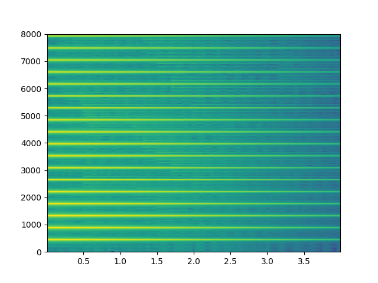
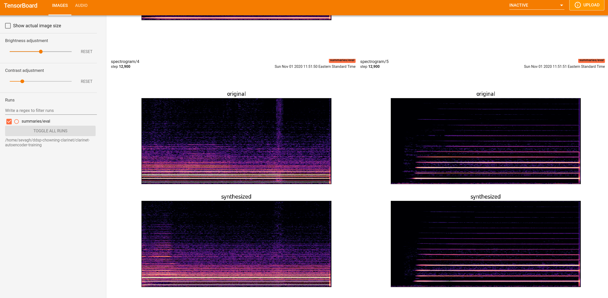
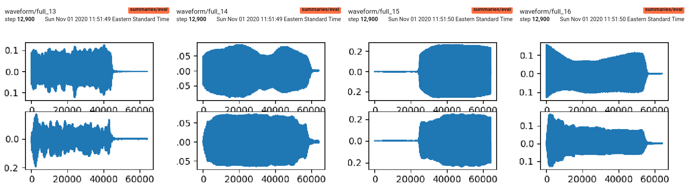

The basic instrument synthesis model in the DDSP paper, which I showed in the DDSP overview page, is the single instrument autoencoder, which used additive sinewave synthesis + filtered noise to synthesize violin sounds. The training data is first encoded into a set of features including f0 and loudness, and their primary example is based on the violin.
DDSP's selling point is that it provides familiar DSP elements in a differentiable (aka machine learnable) platform. I chose to work with the clarinet in my DDSP experiments.
Preliminary - using the DDSP additive synthesizer
I extracted the DDSP additive synthesizer into a script, synth_demo.py, to verify that it can behave like a normal non-neural synthesizer:
# Ignore a bunch of deprecation warnings
import warnings
warnings.filterwarnings("ignore")
import ddsp
import ddsp.training
import matplotlib.pyplot as plt
import numpy as np
import tensorflow as tf
import tensorflow_datasets as tfds
import soundfile
import matplotlib.pyplot as plt
import numpy
sample_rate = 16000 #DEFAULT_SAMPLE_RATE # 16000
n_frames = 1000
hop_size = 64
n_samples = n_frames * hop_size
# Amplitude [batch, n_frames, 1].
# Make amplitude linearly decay over time.
amps = np.linspace(1.0, -3.0, n_frames)
amps = amps[np.newaxis, :, np.newaxis]
# Harmonic Distribution [batch, n_frames, n_harmonics].
# Make harmonics decrease linearly with frequency.
n_harmonics = 20
harmonic_distribution = np.ones([n_frames, 1]) * np.linspace(1.0, -1.0, n_harmonics)[np.newaxis, :]
harmonic_distribution = harmonic_distribution[np.newaxis, :, :]
# Fundamental frequency in Hz [batch, n_frames, 1].
f0_hz = 440.0 * np.ones([1, n_frames, 1])
# Create synthesizer object.
additive_synth = ddsp.synths.Additive(n_samples=n_samples,
scale_fn=ddsp.core.exp_sigmoid,
sample_rate=sample_rate)
# Generate some audio.
audio = additive_synth(amps, harmonic_distribution, f0_hz)
a = audio.numpy()[0] # get numpy array from the tensor expression
try:
soundfile.write('synth_demo_py.wav', a, sample_rate)
except:
pass
_, _, _, im = plt.specgram(a, Fs=sample_rate, NFFT=1024, noverlap=256)
plt.show()
This created the following audio clip and spectrogram:

Training the DDSP single instrument autoencoder
Following the same procedure as other experiments, I vendored the original code[1] into the 1000sharks project[2] so I could modify code as needed for my experiments in this project.
First: what are .gin files? DDSP mixes Python files with gin files, and all of the DDSP training commands are Python scripts which take gin files as arguments. Gin is a Google framework[3] for Python dependency injection. The DDSP README[4] states that:
The main advantage of a ProcessorGroup is that it can be defined with a .gin file, allowing flexible configurations without having to write new python code for every new DAG.
We can see that gin and Python files are mixed in the source code:
For example let's look at the gin files (which represent different collections of Python code) for creating a custom datasets. First the file base.gin:
sevagh:ddsp $ cat ddsp/training/gin/datasets/tfrecord.gin
# -*-Python-*-
include 'datasets/base.gin'
# Make dataset with ddsp/training/data_preparation/ddsp_prepare_tfrecord.py
# --gin_param="TFRecordProvider.file_pattern='/path/to/dataset*.tfrecord'"
# Dataset
train.data_provider = @data.TFRecordProvider()
evaluate.data_provider = @data.TFRecordProvider()
sample.data_provider = @data.TFRecordProvider()
I won't spend more time on gin - the files are easy to read and the commands that use gin files all work.
Python setup + code modifications
The Python setup is mostly covered by the README, but I had to use some extra flags (automatically suggested by the pip tool). I also used a standard virtualenv instead of conda:
Then, the same memory growth adjustment - in fact some of ddsp's main code supports this flag, but it was missing and required in the dataset preparation script (otherwise it would crash):
(ddsp) sevagh:ddsp $ git diff ddsp/training/data_preparation/ddsp_prepare_tfrecord.py
diff --git a/ddsp/training/data_preparation/ddsp_prepare_tfrecord.py b/ddsp/training/data_preparation/ddsp_prepare_tfrecord.py
index af6018d..64ea9b6 100644
--- a/ddsp/training/data_preparation/ddsp_prepare_tfrecord.py
+++ b/ddsp/training/data_preparation/ddsp_prepare_tfrecord.py
@@ -63,6 +63,22 @@ flags.DEFINE_list(
'pipeline_options', '--runner=DirectRunner',
'A comma-separated list of command line arguments to be used as options '
'for the Beam Pipeline.')
+flags.DEFINE_boolean('allow_memory_growth', False,
+ 'Whether to grow the GPU memory usage as is needed by the '
+ 'process. Prevents crashes on GPUs with smaller memory.')
+
+
+def allow_memory_growth():
+ """Sets the GPUs to grow the memory usage as is needed by the process."""
+ gpus = tf.config.experimental.list_physical_devices('GPU')
+ if gpus:
+ try:
+ # Currently, memory growth needs to be the same across GPUs.
+ for gpu in gpus:
+ tf.config.experimental.set_memory_growth(gpu, True)
+ except RuntimeError as e:
+ # Memory growth must be set before GPUs have been initialized.
+ print(e)
def run():
@@ -83,6 +99,9 @@ def run():
def main(unused_argv):
"""From command line."""
+ if FLAGS.allow_memory_growth:
+ allow_memory_growth()
+
run()
Dataset preparation
The training data is a collection of 430 single clarinet note recordings from Freesound[5]. I unzipped the collection into a directory. DDSP requires the training data to be in the form of TFRecord, which is a format for storing sequential data in Tensorflow. This is done with the script ddsp_prepare_tfrecord:
def prepare_tfrecord(
input_audio_paths,
output_tfrecord_path,
num_shards=None,
sample_rate=16000,
frame_rate=250,
window_secs=4,
hop_secs=1,
pipeline_options=''):
"""Prepares a TFRecord for use in training, evaluation, and prediction.
Args:
input_audio_paths: An iterable of paths to audio files to include in
TFRecord.
output_tfrecord_path: The prefix path to the output TFRecord. Shard numbers
will be added to actual path(s).
num_shards: The number of shards to use for the TFRecord. If None, this
number will be determined automatically.
sample_rate: The sample rate to use for the audio.
frame_rate: The frame rate to use for f0 and loudness features.
If set to None, these features will not be computed.
window_secs: The size of the sliding window (in seconds) to use to
split the audio and features. If 0, they will not be split.
hop_secs: The number of seconds to hop when computing the sliding
windows.
pipeline_options: An iterable of command line arguments to be used as
options for the Beam Pipeline.
The default parameters for splitting the input audio are 4 seconds with 1 second overlap - this is similar to the other training data preparation for SampleRNN and WaveNet. The interesting part is the frame_rate for evaluating the f0 and loudness features. These are used in the ddsp/spectral_ops.py script. These define the frame size that the inputs are chunked into for the feature analysis.
The dataset directory after the tfrecord preparation looks like this:
Although I set it to train for 100,000 steps, I stopped the training after 2 hours (total loss reached ~4.0). The results aren't wav files like other models we saw, but summaries that must be loaded in a web UI called Tensorboard[6].
The key file in the above command is the operative_config-0.gin, which is automatically generated by the training step and contains the definition of the trained/learned parameters.
Then you must run tensorboard locally and visit localhost:8000 on your web browser:
(ddsp) sevagh:ddsp-chowning-clarinet $ tensorboard --logdir=/home/sevagh/ddsp-chowning-clarinet/clarinet-autoencoder-training -
-port=8080
2020-11-01 11:52:19.461856: I tensorflow/stream_executor/platform/default/dso_loader.cc:48] Successfully opened dynamic library libcudart.so.10.1
Serving TensorBoard on localhost; to expose to the network, use a proxy or pass --bind_all
TensorBoard 2.3.0 at http://localhost:8080/ (Press CTRL+C to quit)
These contain images with loss, spectrograms, waveforms, and other images, as well as audio clips. For instance, after the 2 hours of training, these were the spectral and waveform results of the synthesis compared to the input training clips:


The generated audio clips downloaded from tensorboard have some decent clarinet sounds:
Exploring the single_intrument.gin model
We looked at WaveNet and SampleRNN through the following lens:
Input data
Training network
Loss function
Generation/sampling - how is audio generated
The input waveforms are converted into frame-wise fundamental frequency (i.e. f0) and loudness features. We can see this in the file ddsp/training/gin/models/solo_instrument.gin, in the Decoder:
The class RnnFcDecoder uses recursive and fully-connected neural network layers to convert the input features of loudness and f0 into a learned output of amplitudes, harmonic distribution, and noise magnitudes which are then used as inputs to the additive and filtered noise synthesis groups:
class SpectralLoss(Loss):
"""Multi-scale spectrogram loss.
This loss is the bread-and-butter of comparing two audio signals. It offers
a range of options to compare spectrograms, many of which are redunant, but
emphasize different aspects of the signal. By far, the most common comparisons
are magnitudes (mag_weight) and log magnitudes (logmag_weight).
"""
def __init__(self,
fft_sizes=(2048, 1024, 512, 256, 128, 64),
loss_type='L1',
mag_weight=1.0,
delta_time_weight=0.0,
delta_freq_weight=0.0,
cumsum_freq_weight=0.0,
logmag_weight=0.0,
loudness_weight=0.0,
name='spectral_loss'):
"""Constructor, set loss weights of various components.
Args:
fft_sizes: Compare spectrograms at each of this list of fft sizes. Each
spectrogram has a time-frequency resolution trade-off based on fft size,
so comparing multiple scales allows multiple resolutions.
loss_type: One of 'L1', 'L2', or 'COSINE'.
mag_weight: Weight to compare linear magnitudes of spectrograms. Core
audio similarity loss. More sensitive to peak magnitudes than log
magnitudes.
delta_time_weight: Weight to compare the first finite difference of
spectrograms in time. Emphasizes changes of magnitude in time, such as
at transients.
delta_freq_weight: Weight to compare the first finite difference of
spectrograms in frequency. Emphasizes changes of magnitude in frequency,
such as at the boundaries of a stack of harmonics.
cumsum_freq_weight: Weight to compare the cumulative sum of spectrograms
across frequency for each slice in time. Similar to a 1-D Wasserstein
loss, this hopefully provides a non-vanishing gradient to push two
non-overlapping sinusoids towards eachother.
logmag_weight: Weight to compare log magnitudes of spectrograms. Core
audio similarity loss. More sensitive to quiet magnitudes than linear
magnitudes.
loudness_weight: Weight to compare the overall perceptual loudness of two
signals. Very high-level loss signal that is a subset of mag and
logmag losses.
name: Name of the module.
"""
Note that losses are computed for spectrograms with a range of hops for varying time-frequency resolution for better results, rather than choosing one.
We can find the training and sampling code defined in ddsp/training/ddsp_run.py:
# Training.
if FLAGS.mode == 'train':
strategy = train_util.get_strategy(tpu=FLAGS.tpu,
cluster_config=FLAGS.cluster_config)
with strategy.scope():
model = models.get_model()
trainer = trainers.Trainer(model, strategy)
train_util.train(data_provider=gin.REQUIRED,
trainer=trainer,
save_dir=save_dir,
restore_dir=restore_dir,
early_stop_loss_value=FLAGS.early_stop_loss_value,
report_loss_to_hypertune=FLAGS.hypertune)
Note that there is the early stop loss, a useful feature to stop training when its no longer useful. Sampling:
In ddsp/training/eval_util.py we can see the model is used to generate audio:
outputs, losses = model(batch, return_losses=True, training=True)
outputs['audio_gen'] = model.get_audio_from_outputs(outputs)
for evaluator in evaluators:
if mode == 'eval':
evaluator.evaluate(batch, outputs, losses)
if mode == 'sample':
evaluator.sample(batch, outputs, step)
The evaluator for the solo instrument model is the F0LdEvaluator, which is a class in ddsp/training/evaluators.py that contains the logic for generating samples from the trained model:
class F0LdEvaluator(BaseEvaluator):
"""Computes F0 and loudness metrics."""
def evaluate(self, batch, outputs, losses):
del losses # Unused.
audio_gen = outputs['audio_gen']
self._loudness_metrics.update_state(batch, audio_gen)
if 'f0_hz' in outputs and 'f0_hz' in batch:
self._f0_metrics.update_state(batch, outputs['f0_hz'])
elif self._run_f0_crepe:
self._f0_crepe_metrics.update_state(batch, audio_gen)
def sample(self, batch, outputs, step):
if 'f0_hz' in outputs and 'f0_hz' in batch:
summaries.f0_summary(batch['f0_hz'], outputs['f0_hz'], step,
name='f0_harmonic')
This is where the comparison images (e.g. spectrograms, waveforms) between the training and synthesized audio are generated and stored in Tensorboard.